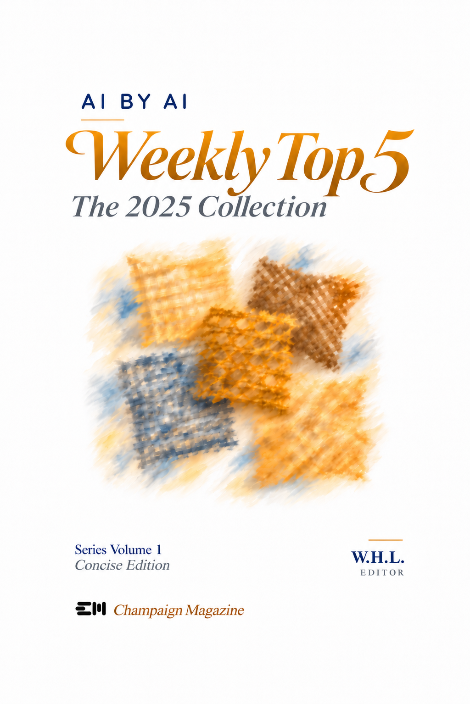

Series Volume 1 · Concise Edition
AI by AI Weekly Top 5: The 2025 Collection
The year’s AI developments as a panel of leading AI models chose them, week by week: 354 entries, each checked against sources, dated to its week and credited to the models that chose it.
Edited by W.H.L., with Claude Opus 5.5 and GPT-6 Astra. Champaign Magazine, November 2026.
